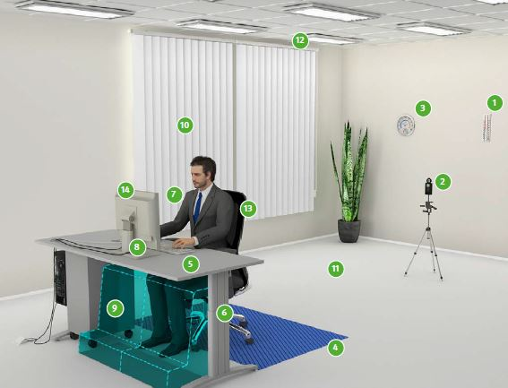

1 |
Temperatur (20 °C - 22 °C) |
2 |
Luftgeschwindigkeit (max. 0,15 m/s) |
3 |
Relative Luftfeuchte (max. 50 %) |
4 |
freie Bewegungsfläche (mindestens 1,5 m2 mindestens 1 m tief und breit) |
5 |
Tischabmessungen (mindestens 160 x 80 cm) |
6 |
Tischhöhe (mindestens 74 ± 2 cm, besser vollständig Höhenverstellbar) |
7 |
Sehabstand (mindestens 50 cm) |
8 |
Bildschirmhöhe (so niedrig wie möglich, oberste Zeile maximal auf Augenhöhe) |
9 |
Beinraum (Beinraumkurve mindestens 85 cm besser 120 cm oder mehr)) |
10 |
Position des Bildschirms zur Fensterfront (Blickrichtung parallel) |
11 |
Akustik (55 dB(A) – 70 dB(A) Nachhallzeit zwischen 0,5 - 0,8 s) |
12 |
Beleuchtung (500 lx – 750 lx; Farbwiedergabe) |
13 |
Büroarbeitsstuhl |
14 |
geeignete Reflexionsgrade (0,15 – 0,75) |